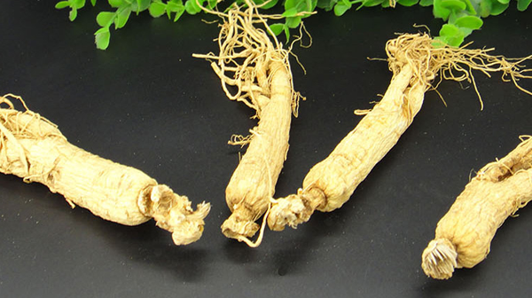

人参的吃法有直接服用、蒸着吃、用水煮或者泡茶喝，很多种药膳都有运用到人参，人参还可以用来泡酒以及将人参打成粉直接食用。人参运用最多的地方就是和其他中草药一起使用，用来治疗多种疾病。人参的禁忌主有很多的，随意使用人参会出现滋补太过。

人参的吃法
1、直接食用
人参的吃法有直接服用，可以将新鲜的人参或者人参饮片直接含入嘴中，过20分钟后吐掉。
2、蒸着吃
人参可以蒸着吃，蒸着吃是将人参放到碗中，隔水蒸30分钟，然后那出来将汤和人参片一起吃。
3、用水煮
人参可以用水煮，将人生切块然后放入茶壶中煮开，煮成人参茶。如果觉得煮麻烦可以直接放入保温杯泡水喝。
4、做药膳食用
和人参相关的药膳有很多，最常见也是最出名的就是将人参和整鸡一起炖煮，做成参鸡汤食用。
5、泡酒
人参可以用来泡酒，很多新婚的夫妻会受到用人参泡的酒，也是蕴含了早生贵子的希望。
6、人参粉
将人参打成粉末每天直接吃，有很强的药用效果，适合慢性疾病需要用人参滋补的人使用。
人参的禁忌
1、 人参不能和萝卜同用
人参不能和萝卜同用，人参虽然长得和萝卜相似，但是萝卜和人参同用会导致胀气。人参除了不能和萝卜同用还不能和茶、大蒜、葡萄一起使用。
2、 人参不能吃太多
如果是用来滋补身体的人参不能吃的太多，吃太多人参会出现滋补太过，导致上火流鼻血。如果需要长期使用人参最好和其他药物配伍一起使用。